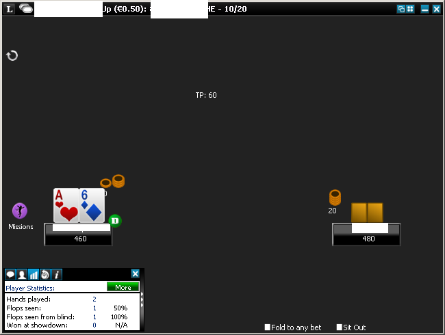

Building a Poker Bot: Card Recognition
This is the first part of Building a Poker Bot series where I describe my experience developing bot software for online poker rooms. I’m building the bot with .NET framework and F# language which makes the task relatively easy and very enjoyable.
Screen recognition
For a human, the very first step to the ability to play poker is to understand the cards, what a hand is and what the value of your hand is. E.g. in Texas Holdem each player gets 2 hole cards which form a hand. At the showdown the player with the best hand wins.
Poker bots are no different, they also need to be taught the notion of cards and hands. A bot should “watch” the table and see which cards he is dealt with. There are several ways to achieve that but I go for a technique called screen recognition, i.e. the bot makes a screenshot of a table and then reads the pixels to understand what’s going on. Very similar to what people do.
Image recognition in general is a tough task. Human beings are very good at interpreting vague images and recognizing familiar objects. It’s much more difficult for computers. General image recognition (think showing a photo to your computer and asking whether there is an animal there) is very tough; corporations like Google and Microsoft are spending numerous man-years and employ techniques like machine learning and neural networks.
Fortunately, poker table recognition is much easier. The images to be recognized are machine-generated, so the same things are rendered more or less the same way all the time. It makes sense to keep the poker table size fixed to some predefined value which makes recognition task fairly easy.
Card recognition steps
There are 13 card faces (from Deuce to Ace) and 4 suits. All of them are just fixed-size images which we need to be able to match with. So we start with a screenshot of a poker table:

The table size is fixed, so are the left and the top pixel positions of hole cards. So, our first step is to extract the small images of cards out of the big screenshot:

Now, we can take the recognition of card faces and suits separately. In our sample layout, suits are color coded. This is very friendly to humans and super simple for the bot. We pick the suit based on the color (ignoring the white pixels):

This leaves us with the task of choosing between 13 card faces. The color information is not important here, we can make the image grey-scale. Moreover, we can reduce the color information to the single bit per pixel - call it white or black:

Now this mask is very simple, and we can compare it with 13 predefined masks for 13 cards pixel by pixel. The one with the biggest amount of matches wins.
Suit recognition
Let’s put some code at the table. We start with suit recognition. getSuit function has type
Color -> string option and converts the color of a pixel into the suit name, if possible. Hearts (“h”)
are red, Diamonds (“d”) are blue, Clubs (“c”) are green and Spades (“s”) are black:
let getSuit (c : Color) =
match c with
| _ when c.B < 127uy && c.G < 127uy && c.R > 127uy -> Some "h"
| _ when c.B > 127uy && c.G < 127uy && c.R < 127uy -> Some "d"
| _ when c.B < 127uy && c.G > 127uy && c.R < 127uy -> Some "c"
| _ when c.B < 127uy && c.G < 127uy && c.R < 127uy -> Some "s"
| _ -> NoneThis function is used by getCardSuit function of type (int -> int -> Color) -> int -> int -> string.
Its first argument is a function which returns the color of a pixel based on (x, y)
relative coordinates (starting with 0). The next two arguments are width and height of the cards. Result is
the same suit name that we described above. The function loops through all the pixels, gets a suit per
pixel and then returns the suit which is the most popular among them. Alternatively, we could just return
the first suit found, but my implementation looks more resilient:
let getCardSuit getPixel width height =
seq { for x in 0 .. width - 1 do
for y in 0 .. height - 1 do
yield getSuit (getPixel x y) }
|> Seq.choose id
|> Seq.countBy id
|> Seq.maxBy (fun (v, c) -> c)
|> fstProducing the black & white pattern
getCardPattern accepts the same parameters as getSuits but returns seq<BW> instead. This is
a sequence of black or white pixels with a helper union type:
type BW = B | WThe function body enumerates the pixels and return black or white result as a flat sequence:
let getCardPattern getPixel width height =
let isWhite (c : Color) =
if c.B > 127uy && c.G > 127uy && c.R > 127uy then W
else B
seq { for x in 0 .. width - 1 do
for y in 0 .. height - 1 do
yield isWhite (getPixel x y) }Card face recognition
Having a black and white pattern, we can compare it with the predefined patterns and pick the most similar one. A pattern is defined with a helper type
type CardPattern = {
Card: string
Pattern: BW array
}Pattern is a sequence which is equivalent to the sequence we got on the previous step.
Card is a string of hand face value 2, 3, 4 .. A. getCardFace has the type
CardPattern[] -> seq<BW> -> string, it accepts an array of known patterns and a pattern
of the card to be recognized. It compares patterns pixel by pixel and returns the card
which has the biggest amount of matches:
let getCardFace patterns bws =
let matchCount h p =
Seq.zip h p
|> Seq.map (fun (v1, v2) -> if v1 = v2 then 1 else 0)
|> Seq.sum
|> decimal
let maxPattern = patterns |> Array.maxBy (fun p -> matchCount bws p.Pattern)
maxPattern.CardGetting the known patterns
So how do we create an array of known patterns? It’s tedious to do manually, so we use a bit of code generation. Basically we just take several screenshots of poker tables and feed them to the following helper function:
let parsePattern getPixel width height =
getCardPattern getPixel width height
|> Seq.map (fun x -> if x = B then "B" else "W")
|> String.concat ";"The function creates a string which can be copy-pasted into F# array of BW.
Putting it all together
Here is the facade function that will be called from the outside:
let recognizeCard getPixel width height =
let value =
getCardPattern getPixel width height
|> getCardValue patterns
let suit = getCardSuit getPixel width height
value + suitThe calling code looks like this:
let image = new Bitmap("...");
let getPixel offsetX offsetY x y =
image.GetPixel(offsetX + x, offsetY + y)
let hand = (recognizeCard (getPixel leftX top) width height) + (recognizeCard (getPixel rightX top) width height)leftX, rightX, top, width and height are well-known parameters of cards locations within a screenshot,
which are hard coded for a given table size.
Conclusion
The full code for card recognition can be found in my github repo. It’s just 75 lines of code which is much less that one could imagine for a task of image recognition. Similar code could be used to recognize other fixed objects at poker table: dealer button location, action buttons, checkboxes etc. In the next part of this series I will show how to recognize non-fixed parts: text and numbers.
Proceed to Part 2 of Building a Poker Bot: String and Number Recognition.